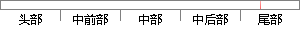

运行结果如下图所示：
片段位置图

相似结果
相似片段：采用了最大满足设备时间槽要求的策略,即采用了设备上所要求时间槽的最大数量,本例中对 3个订单的 10个工序选择了 47个时间槽,运行结果如下图所示(篇幅限制只...
| 标题 | 《基于时间槽模型的批处理短期调度的研究与应用》 |
| 对比库 | 中国学位论文全文数据库 |
| 作者 | 许华民 |
| 机构 | 杭州电子科技大学 |
| 分类 | 控制理论与控制工程 |
| 年份 | 2009 |
| 相似率 | 100% （严重抄袭） |
※ 片段修改建议 ※
近似词参考：- 结果：成果 成绩 成效 后果 了局 效果
系统自动生成语句：运行成果如下图所示：
注：本片段修改建议为系统自动生成，仅供参考。